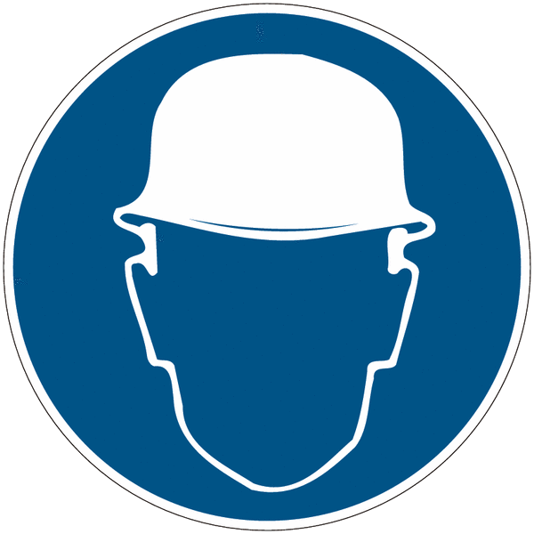
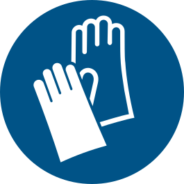

Persoonlijke beschermingsmiddelen
Wat je draagt om heel te blijven
Na deze les kan je:
- uitleggen wat een persoonlijk beschermingsmiddel is en waaraan je ziet dat het deugt
- uitleggen waarom een PBM pas de laatste stap is
- bij een gevaar het juiste bord en het juiste PBM kiezen
- de zes soorten PBM’s benoemen en per soort voorbeelden geven
- een paar regels toepassen waar je zelf niet op zou komen
Achteraan staan oefeningen. Bij elke oefening zit een oplossing verstopt: je ziet ze pas als je erop klikt. Probeer eerst zelf.
1 Wat is een PBM?
In de vorige les leerde je borden lezen. Een blauw rond bord zegt: je moet iets doen of dragen. Meestal gaat het over een persoonlijk beschermingsmiddel, kortweg PBM.
{kind=link}
Een PBM is een middel dat je draagt of vasthoudt om je te beschermen tegen een gevaar voor je gezondheid of je veiligheid.
Dat “draagt of vasthoudt” is belangrijk. De beschermkap op een slijpmachine beschermt je ook, maar die hangt aan de machine en niet aan jou. Het is dus geen PBM. Een veiligheidsbril, oordoppen en werkhandschoenen zijn dat wel.
1.1 De CE-markering
Op elk PBM hoort een CE-markering te staan. Die twee letters betekenen dat het middel voldoet aan de Europese regels en dus echt beschermt.
Een stofbril van twee euro zonder CE-markering ziet er hetzelfde uit als een echte veiligheidsbril. Bij het eerste wegspringende deeltje weet je het verschil.
Kijk op de rand van je veiligheidsbril of aan de binnenkant van je helm. De markering staat er meestal samen met een norm, bijvoorbeeld EN 166 voor oogbescherming.
2 Een PBM is de laatste stap
Stel: in het atelier staat een oude machine die zo luid is dat iedereen in de buurt gehoorbescherming moet dragen.
Je kan iedereen oordoppen geven. Maar er is een betere vraag: kan het lawaai zelf weg? Je zou de motor kunnen afschermen, of een nieuwere en stillere machine kunnen kopen.
1 Neem het gevaar weg
De stilste machine kopen. De giftige verf vervangen door een verf op waterbasis.
2 Scherm het gevaar af
Een kap over de motor. Een afzuiging boven de werkbank. Een hek rond de robot.
3 Bescherm de persoon
Lukt stap 1 en 2 niet, dan pas komen de oordoppen, de bril, de handschoenen.
Die volgorde is geen mening, ze staat in de wet. Een PBM beschermt namelijk maar één iemand, en alleen zolang die het draagt. Een kap over de motor beschermt iedereen in het lokaal, ook wie even binnenkomt om iets te vragen.
PBM’s zijn de laatste lijn van bescherming. Ze zijn geen alternatief voor een veilige machine, ze komen erbovenop.
3 Van gevaar naar bord naar PBM
Nu kan je de twee lessen aan elkaar knopen. Overal waar je werkt, loopt dezelfde ketting van drie schakels.
{kind=link}
wegspringende deeltjes
→
→
{kind=link}
beschermt je
Het gevaar bepaalt alles. Het bord is maar een boodschapper: het vertelt je welk gevaar hier zit en wat je daartegen moet dragen. Het PBM is wat je werkelijk beschermt.
Daarom werkt de ketting ook als er geen bord hangt. Zie je een gevaar dat je herkent, dan weet je zelf welk PBM erbij hoort. En omgekeerd: hangt er een blauw bord dat je nog nooit gezien hebt, dan kan je uit de tekening afleiden wat je moet halen.
3.1 Drie kettingen om te oefenen
| Het gevaar | Het bord | Wat het vraagt | Wat je haalt |
|---|---|---|---|
| Lawaai boven 85 dB(A) | Draag gehoorbescherming | Oordoppen of gehoorkappen | |
| Iets kan op je hoofd vallen |  |
Draag hoofdbescherming | Een veiligheidshelm |
| Scherpe plaat, snijgevaar |  |
Draag handschoenen | Snijwerende handschoenen |
Merk op dat de laatste kolom nooit vanzelf uit het bord volgt. Het bord zegt handschoenen, niet welke handschoenen. Dat moet je zelf weten, en daarover gaat de rest van deze les.
4 De zes soorten
PBM’s worden ingedeeld naar het lichaamsdeel dat ze beschermen.
{kind=link}
{kind=link}
{kind=link}
{kind=link}
{kind=link}
4.1 Ogen en gezicht
Je ogen kunnen niet genezen zoals je huid dat kan. Wat er stuk is, blijft stuk. Ze moeten beschermd worden tegen wegspringende deeltjes, opspattende chemische stoffen, stof, fel licht en straling, hitte en lasvonken.
{kind=link}
{kind=link}
{kind=link}
{kind=link}
- Een veiligheidsbril heeft een montuur van onbrandbaar materiaal, geharde of kunststoflenzen en zijkapjes tegen deeltjes die van opzij komen.
- Een ruimzichtbril sluit met een elastische band helemaal aan op je gezicht en heeft ventilatieopeningen. Die gebruik je bij stof en spatten.
- Een lasbril heeft twee lagen: een heldere ruit tegen wegspringende metaaldeeltjes en een donkergetinte ruit tegen fel licht en warmte.
Moet je hele gezicht beschermd worden, dan volstaat een bril niet.
{kind=link}
Een gezichtsscherm van kunststof of metaalglas beschermt tegen vonken en vlambogen, en kan aan een helm vastgemaakt worden. Een lashelm doet hetzelfde en heeft een ruit die vanzelf donker wordt zodra de vlamboog ontsteekt.
4.2 Gehoor
Geluid meet je in decibel, geschreven als dB(A). Twee grenzen tellen:
| Geluidsniveau | Wat er geldt |
|---|---|
| vanaf 80 dB(A) | Er kan gehoorschade ontstaan. Je werkgever moet gehoorbescherming ter beschikking stellen. |
| vanaf 85 dB(A) | Je bent verplicht gehoorbescherming te dragen. |
Schade aan je gehoor geneest niet. Een oor herstelt zich niet zoals een snee in je vinger. Wat je op je zestiende kapot maakt, ben je de rest van je leven kwijt.
{kind=link}
{kind=link}
{kind=link}
{kind=link}
| Soort | Demping | Bijzonderheid |
|---|---|---|
| Oordoppen | 10 dB(A) | Schuimplastic of geplastificeerd met folie. Goedkoop, soms wegwerp. |
| Oorpluggen | 10 tot 15 dB(A) | Kunststof staafjes of schuimrolletjes die je in je oor stopt. |
| Otoplastieken | instelbaar | Op maat gemaakt, comfortabel om lang te dragen, maar duur. |
| Gehoorkappen | ongeveer 25 dB(A) | Zien eruit als een hoofdtelefoon en sluiten het hele oor af. |
Bij heel veel lawaai kan je kappen en pluggen samen dragen. Dan tel je de demping niet zomaar op, maar je komt wel een stuk lager uit dan met één van de twee.
4.3 Hoofd
Een veiligheidshelm beschermt tegen vallende voorwerpen en tegen stoten, ook als je zelf valt.
{kind=link}
Een helm bestaat uit vier delen:
- de helmschaal, het harde materiaal aan de buitenkant
- de klep, de rand die boven je ogen uitsteekt
- het binnenwerk: hoofdband met zweetband, achterhoofdband om de maat aan te passen, en draagbanden
- een schokabsorberende vulling
Dat binnenwerk doet het eigenlijke werk. De schaal vangt de klap op, de ruimte tussen schaal en hoofd zorgt dat de klap niet rechtstreeks op je schedel terechtkomt.
Stel je helm goed af, zodat hij niet los op je hoofd staat. Een helm die wiebelt, staat op het verkeerde moment scheef.
Vervang je helm nadat hij een flinke klap gehad heeft, ook als je aan de buitenkant niets ziet. De vulling is dan ingedrukt en vangt de volgende klap niet meer op.
4.4 Handen en armen
Je handen lopen risico op scherpe voorwerpen, verbranden, contact met elektriciteit, giftige producten, extreme koude, straling, schuren en pletten. Handschoenen bestaan dan ook in rubber, leer, PVC, vinyl en textiel.
{kind=link}
{kind=link}
{kind=link}
{kind=link}
{kind=link}
{kind=link}
Hier geldt wat we bij de ketting al zagen: het bord zegt handschoenen, jij kiest welke. En die keuze telt.
Geen handschoenen bij draaiende onderdelen. Aan een boormachine of een draaibank draag je géén handschoenen. De stof wordt gegrepen en trekt je hand mee de machine in. Een blote hand die uitschiet, komt eraf. Een hand in een handschoen niet.
Geen juwelen. Geen ringen, horloges of armbandjes. Een ring die achter iets blijft haken, neemt je vinger mee.
Een verkeerde handschoen dragen is soms gevaarlijker dan er geen dragen. Dat is precies waarom je moet weten welke soorten er zijn.
4.5 Voeten
Veiligheidsschoenen en veiligheidslaarzen beschermen tegen pletten, stoten, kneuzen, gevaarlijke producten en in scherpe voorwerpen trappen. Ze geven bovendien meer steun en extra grip.
{kind=link}
Vier dingen maken een veiligheidsschoen anders dan een gewone schoen:
- een versterkte neus, meestal van staal of composiet
- bescherming van de enkels, hoger opgetrokken dan een sportschoen
- een tussenzool tegen prikken, zodat een spijker er niet doorheen gaat
- een antislipzool
4.6 Lichaam
Beschermende kleding beschermt tegen koude, hitte, verontreiniging, gevaarlijke stoffen, verbranding en wegvliegende deeltjes.
- warme kledij tegen de kou
- een brandweerpak tegen verbranding
- een wegwerpoverall tegen gevaarlijke stoffen
- een stofjas of overall tegen vuil
- zaagkleding tegen ongevallen met zaagmachines
Waartegen een stuk kleding beschermt, staat met een pictogram op de kleding zelf. Kijk dus op het label voor je iets aantrekt.
4.6.1 Signalisatiekleding
{kind=link}
Signalisatiekleding is het buitenbeentje: ze beschermt je niet tegen iets dat jou raakt, maar zorgt dat anderen je zien. Felle fluokleuren overdag, reflecterende banden in het donker en in de lichten van een auto.
Denk aan een wegenwerker naast een rijbaan. Zijn hesje beschermt hem niet tegen de auto. Het zorgt dat de bestuurder hem op tijd opmerkt.
Je kent het zelf van je fluohesje op de fiets. Dat is precies hetzelfde principe.
5 Waarom je ze echt draagt
Een PBM is bijna altijd lastig. Een bril beslaat, oordoppen sluiten je af van je collega’s, handschoenen maken je onhandig. En je moet ze gaan halen.
Toch draag je ze, om drie redenen.
Sommige schade komt nooit meer goed. Gehoorschade geneest niet. Een oog dat je kwijtspeelt, komt niet terug. Bij een snee in je vinger heb je een tweede kans, bij deze twee niet.
Je voelt het gevaar niet altijd aankomen. Lawaai doet geen pijn op het moment dat het je gehoor beschadigt. Fijn stof ruik je niet. Van veel schade merk je pas iets als ze er al is.
Het gaat niet alleen over jou. Wie thuiskomt met een hand minder, verandert niet alleen zijn eigen leven. En op een werf kijkt iedereen naar wie zijn helm afzet.
Een bril opzetten kost je vijf seconden. Reken eens uit hoeveel keer je dat kan doen in de tijd die één ziekenhuisbezoek kost.
6 Oefeningen
Opgave 1. Welk lichaamsdeel beschermt elk van deze borden?
- de voeten · b. het gezicht · c. het gehoor · d. de handen en armen
Opgave 2. Een klasgenoot zegt: “Er hangt een bord dat ik gehoorbescherming moet dragen, dus die machine is veilig.” Wat klopt er niet aan die redenering?
Een bord maakt niets veilig. Het bord hangt er net omdat er een gevaar is dat niet weggenomen kon worden. Het PBM is de laatste lijn van bescherming, en het werkt alleen als je het ook echt draagt.
Opgave 3. Je gaat boren aan de kolomboormachine. Het metaal is scherp aan de randen. Welke PBM’s draag je, en welke draag je bewust niet?
Wel: een veiligheidsbril tegen wegspringende krullen, en veiligheidsschoenen. Bij een luide machine ook gehoorbescherming.
Niet: handschoenen. De boor draait, en de stof zou je hand mee naar binnen trekken. Ook je ring, horloge en armbandje gaan uit, en lang haar bind je op.
Het scherpe metaal hanteer je mét handschoenen, maar dan met de machine uit.
Opgave 4. Je vindt in de kast twee paar handschoenen: dunne wegwerp plastic handschoenen en dikke leren werkhandschoenen. Je moet een plaat staal met scherpe randen verplaatsen. Waarom is de keuze hier belangrijk?
Je neemt de leren werkhandschoenen, en beter nog snijwerende handschoenen als die er zijn. De wegwerphandschoenen zijn gemaakt tegen vuil en vocht, niet tegen snijden. Ze scheuren bij het eerste contact met de rand.
Erger: ze geven je het gevoel dat je beschermd bent, en dan pak je de plaat onvoorzichtiger vast dan met blote handen.
Opgave 5. Bij het lassen hangen deze twee borden naast elkaar. Waarom is één van de twee niet genoeg?
Lassen brengt twee verschillende gevaren mee. De vlamboog geeft fel licht en straling, en daartegen beschermt de lashelm je ogen en gezicht. Maar er vliegen ook vonken weg, en die landen op je armen en je romp. Lassen in een T-shirt levert brandwondjes op, ook al draag je een perfecte lashelm.
Elk bord hoort bij een eigen gevaar. Twee borden betekent altijd: allebei.
Opgave 6. In het lokaal komt een nieuwe machine die veel fijn houtstof maakt. Iemand stelt voor om iedereen een stofmasker te geven.
Wat zou jij eerst voorstellen, en waarom?
Eerst kijken of het stof zelf aangepakt kan worden, want een PBM is de laatste stap:
- kan de machine een afzuiging krijgen die het stof meteen wegzuigt?
- kan de machine ergens anders staan, of afgeschermd worden?
Lukt dat niet of niet volledig, dan pas maskers. En dan nog: de afzuiging beschermt iedereen in het lokaal, ook wie geen masker op heeft.
Opgave 7. Zoek in het lokaal. Welke PBM’s liggen hier, en bij welke machine horen ze? Kijk ook of je bij elke machine het bijbehorende blauwe bord vindt.
Kijk op de machine zelf, op de kast ernaast en aan de deur van het lokaal. Vind je een machine zonder bord, of een bord zonder PBM in de buurt? Dat is een goede opmerking voor je leerkracht.
7 Samengevat
- Een PBM is iets wat je draagt of vasthoudt om je te beschermen. Het draagt een CE-markering.
- Een PBM is de laatste stap. Eerst het gevaar wegnemen, dan afschermen, dan pas de persoon beschermen.
- De ketting is altijd dezelfde: gevaar → bord → PBM. Het bord is de boodschapper, het PBM beschermt.
- Zes soorten: ogen en gezicht · gehoor · hoofd · handen en armen · voeten · lichaam, met signalisatiekleding als aparte vorm die je zichtbaar maakt.
- Het bord zegt wat, niet welk. De juiste handschoen kiezen is jouw werk.
- Geen handschoenen en geen juwelen bij draaiende onderdelen.
- Gehoorschade en oogletsel genezen niet.